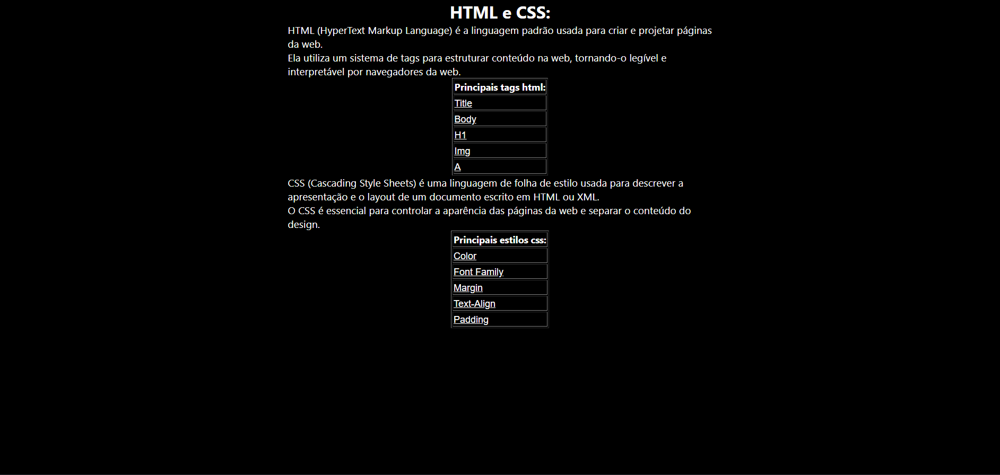

A propriedade margin no CSS é usada para controlar o espaço externo ao redor de um elemento HTML, ou seja, o espaço entre o elemento e os outros elementos ao seu redor. Ela permite definir margens em torno de um elemento em todas as direções (superior, direita, inferior, esquerda).
| Código |
|---|
| Site |
|  |